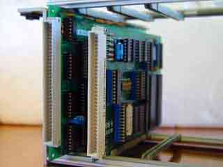
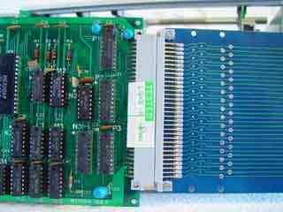
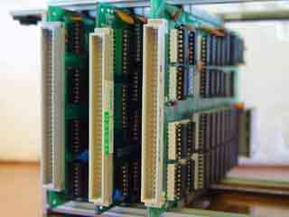

|
|
NOT Standard Eurocard by Lee Davison |
|
Electrical differencesWhile searching for information on the Tangerine floppy disk controller (anyone?) I found more than one site that described the Microtan as a "standard Eurocard system". But it's not.
While it looks somewhat like a Eurocard card, they both use the same 64 way connector, and it is similar in size the Microtan card is 43mm deeper and 15mm taller than a standard 160mm x 100mm Eurocard.
But the differences don't end there, not all the Microtan cards are the same and there are, as far as I can see, three subtly different cards. The CPU and DOS cards, TANEX and the expansion slot cards all have their edge connectors at slightly different positions along the card edge ensuring that they will not fit in the wrong slot position.
   Microtan 65 with the smaller Eurocard Acorn 6809 beside it.
Microtan TANRAM on a Eurocard extender, note the height difference.
The CPU, TANEX and graphics cards all have differently located connectors.
So if you have Microtan cards without a rack you will not be able to house them in a standard Eurocard rack.
As well as the, not insurmountable, physical differences between Microtam and Eurocard cards the backplanes are very different. While Eurocards can work with an entirely passive backplane the Microtan system has an active backplane to provide buffering and isolation as well as expansion signals for the expansion slots.
| Last page update: 24th September, 2005. | e-mail me
 |